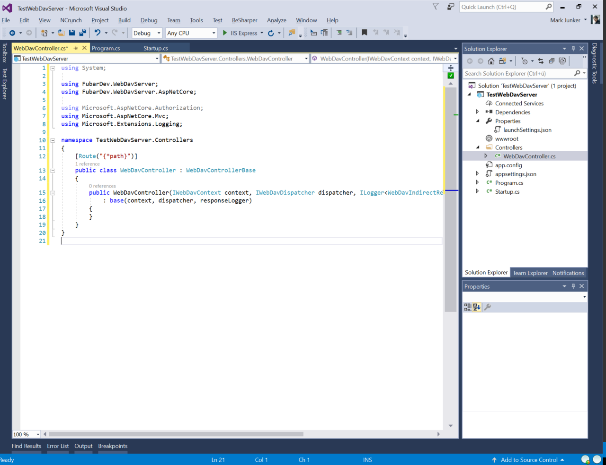
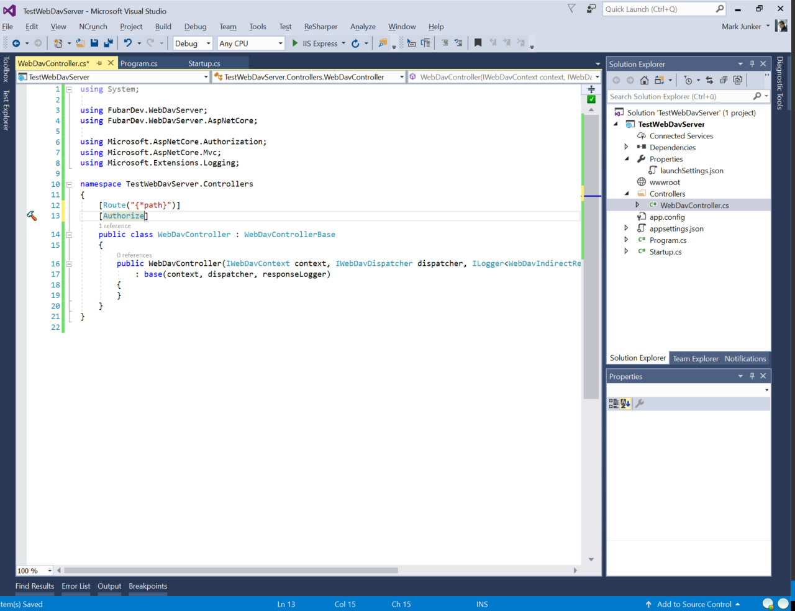
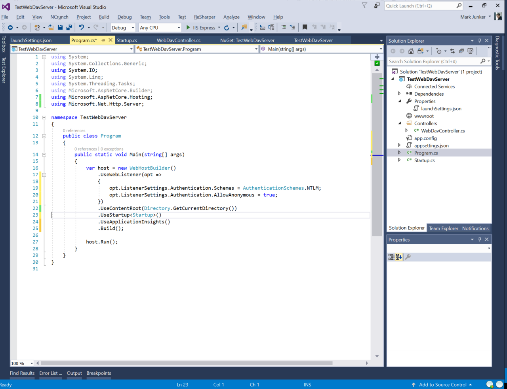
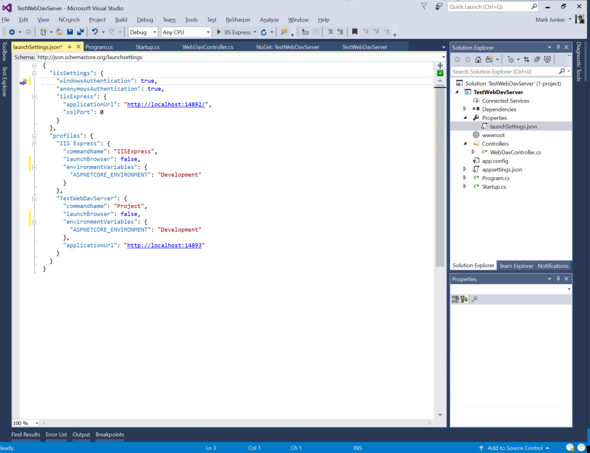
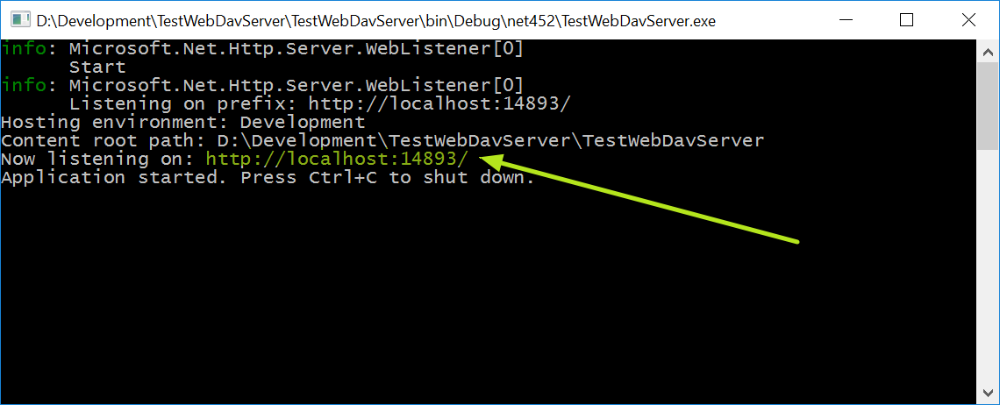

You own WebDAV server
This walk-through shows how to create your own WebDAV server using Visual Studio 2017.
Create the basic project
The easiest (and currently only supported) way to create a WebDAV server is using a ASP.NET Core project as host.
Create the ASP.NET Core project

Select the WebAPI template

Configure the WebDAV NuGet repository (optional)
Open the package manager setup

Add the package source
The package source for the WebDAV server is (until release) on MyGet. The URL is for the NuGet v3 feed is https://www.myget.org/F/webdav-server/api/v3/index.json.

Add the WebDAV NuGet packages
This are the packages that must be installed:
-
This is the main package containing the WebDAV implementation.
FubarDev.WebDavServer.FileSystem.DotNet
This package contains the System.IO based file system implementation.
FubarDev.WebDavServer.Props.Store.TextFile
This package stores the dead properties in a JSON file.
FubarDev.WebDavServer.Locking.InMemory
This is the implementation of the locking that doesn't persist the information about the active locks.
FubarDev.WebDavServer.AspNetCore
This package contains the glue between ASP.NET Core and the WebDAV server.

Finally, we should install some remaining package updates.

Create the WebDAV controller
Rename the
ValuesController.cstoWebDavController.cs
Replace the content of
WebDavController.cswith the following:using System; using FubarDev.WebDavServer; using FubarDev.WebDavServer.AspNetCore; using Microsoft.AspNetCore.Authorization; using Microsoft.AspNetCore.Mvc; using Microsoft.Extensions.Logging; namespace TestWebDavServer.Controllers { [Route("{*path}")] public class WebDavController : WebDavControllerBase { public WebDavController(IWebDavContext context, IWebDavDispatcher dispatcher, ILogger<WebDavIndirectResult> responseLogger = null) : base(context, dispatcher, responseLogger) { } } }
Explanation
This controller uses the base controller class from FubarDev.WebDavServer.AspNetCore. This controller contains everything that's needed for a WebDAV server class 1,2 implementation.
The IWebDavContext is the request context (similar to the HttpContext used in ASP.NET Core). It is used to query some basic information about the current request.
The IWebDavDispatcher is the interface to the main WebDAV server functionality.
Configure the servies
Add the
Microsoft.AspNetCore.Authenticationpackage
Replace in
Startup.cstheAddMvc()in functionConfigureServiceswith the following code:.Configure<DotNetFileSystemOptions>( opt => { opt.RootPath = Path.Combine(Path.GetTempPath(), "webdav"); opt.AnonymousUserName = "anonymous"; }) .AddTransient<IPropertyStoreFactory, TextFilePropertyStoreFactory>() .AddSingleton<IFileSystemFactory, DotNetFileSystemFactory>() .AddSingleton<ILockManager, InMemoryLockManager>() .AddMvcCore() .AddAuthorization() .AddWebDav();
Explanation
The configuration of DotNetFileSystemOptions uses the %TEMP%\webdav folder as root folder. It also specifies that the unauthenticated user always gets the name anonymous.
This code also adds some required services:
IPropertyStoreFactory is the interface used for getting an IPropertyStore for an IFileSystem.
IFileSystemFactory is the unterface used for getting an IFileSystem for the currently authenticated IPrincipal.
ILockManager is used for the coordination of WebDAV locks.
Add NTLM authentication
To allow NTLM (or Negotiate) authentication, the following steps must be done:
Add the
Microsoft.AspNetCore.AuthenticationpackageAdd the
[Authorize]attribute to theWebDavController
Replace in
Program.csthe.UseKestrel()with the WebListener.UseWebListener(opt => { opt.ListenerSettings.Authentication.Schemes = AuthenticationSchemes.NTLM; opt.ListenerSettings.Authentication.AllowAnonymous = true; })Remove the IIS integration
Now, your Program.cs file should like like this:

Disable the automatic browser launch at application start
To disable the automatic browser launch, you have to set the launchBrowser entry in the launchSettings.json file (can befound under Properties) to false.
Before:

After:

Change the start project (important!)
You must change the start project from IIS Express to TestWebDavServer (your test project). Otherwise, using the NTLM authentication configured above, doesn't work.

Running the test server
When you start the test server, you can see the WebDAV url in the console window:

Enter this URL into the Windows Explorers address bar and you should be able to connect to the server.